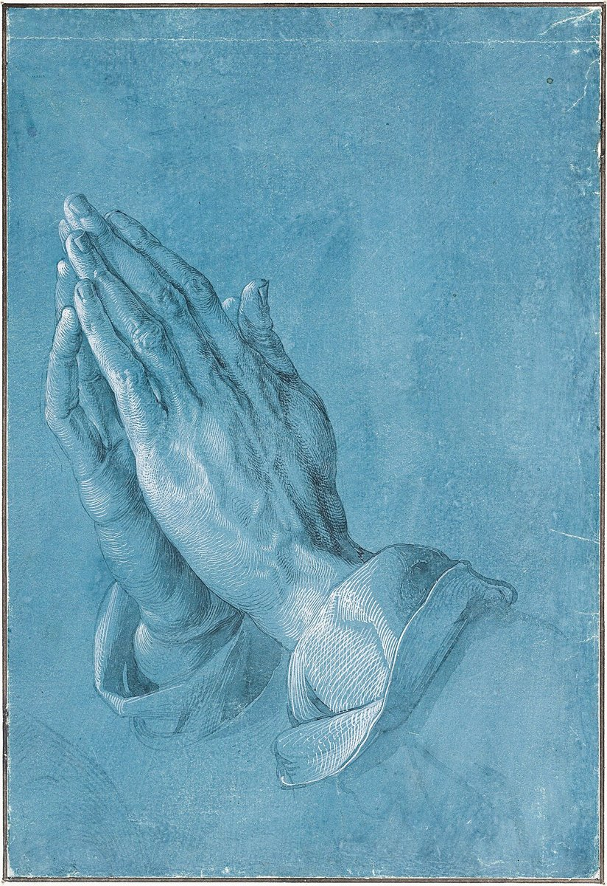

Psalms 25 — The Mister Translation

Psalm 25:1. Dürer drew these hands in 1508 as a study for an apostle in an altarpiece, and the picture has become the common image of prayer; it is not a scene of the psalm, which has no hands, only a soul lifted up, eyes toward Jehovah and feet freed from a net.

Translator's Notes — verse by verse
⭐ An alphabet, with breaks. The psalm is an acrostic: the lines begin with the letters of the Hebrew alphabet in order, alef at verse 1, gimel at 3, dalet at 4, he at 5, zayin at 6, chet at 7, tet at 8 and so on to tav at verse 21. It does not run clean. Bet is not the first word of verse 2 but the second (Elohai, bekha batachti, “my God, in you I have trusted”); the vav line is missing, for verse 5 has he and then goes on without a vav; there is no qof; resh begins both verse 18 and verse 19; and verse 22, after the tav, begins with an extra pe, pedeh, “redeem”. The same extra pe closes Psalm 34 (now on these pages), which also lacks the vav. The Hebrew column here carries the lines as printed, and the notes name the break where it falls.
⭐ To you I lift up my soul. “To you, Jehovah, I lift up my soul” stands in this one verse, and “I lift up my soul” stands in two verses, here and Psalm 86:4. The heading, ledavid, “of David”, is part of verse 1 in the Hebrew and is not numbered apart. The verb is nasa, the one of Psalm 24:4 (now on these pages), “who has not lifted up my soul to what is false”: the same words turned from a denial to a gift. The KJV has “Unto thee, O Lord, do I lift up my soul”, the NIV “In you, Lord my God, I put my trust”, the NWT 1984 “To you, O Jehovah, I raise my very soul” and the Douay “To thee, O Lord, have I lifted up my soul”. ⚠ The NIV has no “soul” at all in verse 1; it renders the line as trust.
⭐ Let me not be ashamed. “Let me not be ashamed” stands in four verses; the trust of verse 2 (batach) is a trust that will not be disappointed, and “let not my enemies exult over me” stands in this one verse. “Yes, none who wait for you will be ashamed” stands in this one verse (qavah), and “those who act treacherously for nothing” stands in this one verse. The KJV has “let me not be ashamed, let not mine enemies triumph over me” and “let them be ashamed which transgress without cause”, the NIV “do not let me be put to shame, nor let my enemies triumph over me” and “shame will come on those who are treacherous without cause”, the NWT 1984 “O may I not be ashamed. May my enemies not exult over me” and “They will be ashamed who are dealing treacherously without success” and the Douay “Neither let my enemies laugh at me”.
⭐ Your ways, your paths. “Your ways, Jehovah, make known to me” stands in this one verse (derekh), and “your paths teach me” stands in this one verse. “Lead me in your truth” stands in this one verse (emet), the guide being the one of Psalm 23:3 (now on these pages), and yasha, salvation, is his name here, “the God of my salvation”. The KJV has “Shew me thy ways, O Lord; teach me thy paths”, the NIV “Show me your ways, Lord, teach me your paths”, the NWT 1984 “Make me know your own ways, O Jehovah” and the Douay “Direct me in thy truth, and teach me”.
⭐ Remember, and do not remember. “Remember your compassion, Jehovah, and your steadfast love” stands in this one verse (rekhem, chesed), “for they are from of old” stands in this one verse; and then the same verb (zakhar) is turned round, “the sins of my youth” (chatto’t ne’urai) stands in this one verse (naar, pesha), do not remember, according to your steadfast love remember me. Both halves are one plea: that Jehovah remember in the right direction. The KJV has “Remember, O Lord, thy tender mercies and thy lovingkindnesses; for they have been ever of old”, the NIV “Remember, Lord, your great mercy and love, for they are from of old”, the NWT 1984 “Remember your mercies, O Jehovah, and your loving-kindnesses” and the Douay “Remember, O Lord, thy bowels of compassion”. For verse 7 the KJV has “Remember not the sins of my youth, nor my transgressions”, the NIV “Do not remember the sins of my youth and my rebellious ways” and the NWT 1984 “The sins of my youth and my revolts O do not remember”.
⭐ Good and upright. “Good and upright is Jehovah” stands in this one verse (yashar), “therefore he instructs sinners in the way” stands in this one verse; the verb is yoreh, to point out, to teach, the verb of the torah. The KJV has “Good and upright is the Lord: therefore will he teach sinners in the way”, the NIV “Good and upright is the Lord; therefore he instructs sinners in his ways”, the NWT 1984 “That is why he instructs sinners in the way” and the Douay “The Lord is sweet and righteous: therefore he will give a law to sinners in the way”.
⭐ The meek. “He guides the meek in judgment” stands in this one verse (anav), and vayelammed anavim darko, “and teaches the meek his way”; the meek are those of Psalm 37:11 (now on these pages) who inherit the land, as verse 13 will say again. The KJV has “The meek will he guide in judgment: and the meek will he teach his way”, the NIV “He guides the humble in what is right and teaches them his way”, the NWT 1984 “He will cause the meek ones to walk in [his] judicial decision” and the Douay “He will guide the mild in judgment”.
⭐ All the paths of Jehovah. “All the paths of Jehovah are steadfast love and truth” stands in this one verse, the pair of the name proclaimed at Exodus 34:6 (now on these pages), to “those who keep his covenant and his testimonies”, which stands in this one verse (notsere, brit, edot). The KJV has “All the paths of the Lord are mercy and truth unto such as keep his covenant and his testimonies”, the NIV “All the ways of the Lord are loving and faithful toward those who keep the demands of his covenant” and the NWT 1984 “All the paths of Jehovah are loving-kindness and trueness For those observing his covenant and his reminders”.
⭐ For your name’s sake. “For your name’s sake, Jehovah” stands in two verses, here and Psalm 31:4 (shem), and “you will pardon my iniquity, for it is great” stands in this one verse: the verb salach, with the iniquity (avon), is Moses’ own at Exodus 34:9 (now on these pages), where the same word is asked for the whole people. The Hebrew verb is a future with vav, “and you will pardon”, which the versions take as a request or as a statement. The KJV has “For thy name’s sake, O Lord, pardon mine iniquity; for it is great”, the NIV “For the sake of your name, Lord, forgive my iniquity, though it is great”, the NWT 1984 “You must even forgive my error, for it is considerable” and the Douay “thou wilt pardon my sin: for it is great”.
⭐ Who is the man? “Who is the man who fears Jehovah?” stands in this one verse (yare, bachar), and the answer is that he will be taught the way he should choose. “His soul will lodge in good” stands in this one verse, and “and his seed will inherit the land” stands in this one verse (zera); the promise is the meek’s at Psalm 37:29 (now on these pages). The KJV has “His soul shall dwell at ease; and his seed shall inherit the earth”, the NIV “They will spend their days in prosperity, and their descendants will inherit the land”, the NWT 1984 “His own soul will lodge in goodness itself” and the Douay “His soul shall dwell in good things”.
⭐ The counsel of Jehovah. “The counsel of Jehovah is for those who fear him” stands in this one verse (sod), the word for the council of intimates and what they share; Amos 3:7 has the same word for what he does not do without telling his servants. The KJV has “The secret of the Lord is with them that fear him; and he will shew them his covenant”, the NIV “The Lord confides in those who fear him; he makes his covenant known to them”, the NWT 1984 “The intimacy with Jehovah belongs to those fearful of him” and the Douay “The Lord is a firmament to them that fear him”.
⭐ My eyes toward Jehovah. “My eyes are always toward Jehovah” stands in this one verse (tamid), and “for he will bring my feet out of the net” stands in this one verse (regel): the net is the fowler’s of Psalm 91:3 (now on these pages). The KJV has “Mine eyes are ever toward the Lord; for he shall pluck my feet out of the net”, the NIV “My eyes are ever on the Lord, for only he will release my feet from the snare” and the NWT 1984 “For he it is that brings my feet out of the net”.
⭐ Turn to me. “Turn to me and be gracious to me” stands in three verses, here, Psalm 86:16 and Psalm 119:132 (now on these pages) (chanan); and the reason is “for I am alone and afflicted”, which stands in this one verse (yachid, oni). The KJV has “Turn thee unto me, and have mercy upon me; for I am desolate and afflicted”, the NIV “Turn to me and be gracious to me, for I am lonely and afflicted”, the NWT 1984 “For I am solitary and afflicted” and the Douay “for I am alone and poor”.
⭐ The troubles of my heart. “The troubles of my heart have widened” stands in this one verse, the narrow places (tsarah) grown wide as the heart can hold, and “from my distresses bring me out” stands in this one verse. ⚠ The verb hirchivu can be read as an intransitive, “have grown wide”, or as a request, “widen”; the KJV has “The troubles of my heart are enlarged: O bring thou me out of my distresses”, the NIV “Relieve the troubles of my heart and free me from my anguish”, the NWT 1984 “Distresses of my heart have multiplied” and the Douay “The troubles of my heart are multiplied: deliver me from my necessities”.
⭐ See, and lift away. “See my affliction and my toil” stands in this one verse (amal), and “see my affliction” stands in four verses, here, Psalm 9:14, Psalm 119:153 (now on these pages) and Job 10:15. “And lift away all my sins” stands in this one verse, the verb of verse 1 now taking the sins instead of the soul. The KJV has “Look upon mine affliction and my pain; and forgive all my sins”, the NIV “Look on my affliction and my distress and take away all my sins” and the NWT 1984 “See my affliction and my trouble, And pardon all my sins”. Verse 19 begins resh again, and “and with violent hatred they hate me” stands in this one verse (chamas); the KJV has “they hate me with cruel hatred”, the NIV “how fiercely they hate me” and the NWT 1984 “with a violent hatred they have hated me”.
⭐ Guard my soul. “Guard my soul and deliver me” stands in this one verse (shamar, natsal), and “let me not be ashamed, for I have taken refuge in you” stands in this one verse, so that the psalm ends on the shame it began with. The KJV has “O keep my soul, and deliver me: let me not be ashamed; for I put my trust in thee”, the NIV “Guard my life and rescue me; do not let me be put to shame, for I take refuge in you” and the NWT 1984 “Do guard my soul and deliver me”.
⭐ Integrity and uprightness. “Integrity and uprightness will watch over me” stands in this one verse (tom, yashar): the two words are Jehovah’s own at verse 8, “good and upright”, and here they are given as guards. The KJV has “Let integrity and uprightness preserve me; for I wait on thee”, the NIV “May integrity and uprightness protect me, because my hope, Lord, is in you”, the NWT 1984 “Let integrity and uprightness themselves safeguard me” and the Douay “The innocent and the upright have adhered to me”.
⭐ Redeem Israel. “Redeem Israel, God, out of all his troubles” stands in this one verse (padah). The line begins with pe, the letter after tav, outside the alphabet; the Name is not written anywhere from verse 16 to the end, and the last line says only Elohim: the personal prayer of David closes on the people. The KJV has “Redeem Israel, O God, out of all his troubles”, the NIV “Deliver Israel, O God, from all their troubles!” and the NWT 1984 “O God, redeem Israel out of all his distresses”.
Patterns worth carrying forward
Where this translation keeps the words exact and distinct: “lift up” for nasa at verse 1 and “lift away” for nasa at verse 18; “remember” for zakhar in verses 6 and 7; “steadfast love” for chesed in verses 6, 7 and 10; “compassion” for rachamim; “the meek” for anavim at verse 9; “counsel” for sod; “integrity” for tom; “ashamed” for bosh in verses 2, 3 and 20; “Jehovah” for the Name, written ten times, in verses 1, 4, 6, 7, 8, 10, 11, 12, 14 and 15, and not at all from verse 16 on.
Echoes paid. Psalm 24:4; Psalm 23:3; Psalm 34:23; Psalm 37:11 and 37:29; Psalm 91:3; Psalm 119:132 and 119:153; Exodus 34:6 and 34:9.
Echoes planted. Psalm 86:4 and 86:16 (the same lines said again), Psalm 31:4 and Psalm 9:14; Job 10:15; Amos 3:7. None of these is translated here yet.
⚠ A note on order: Psalms stands on these pages at chapters 1, 2, 8, 18, 19, 22, 23, 24, 25, 27, 32, 34, 37, 40, 42, 46, 51, 56, 62, 63, 90, 91, 100, 103, 118, 119, 121, 130, 138, 139, 145 and 150, chosen by how often a passage is read rather than in sequence. The sequential thread is unchanged: next in sequence is Psalm 3.